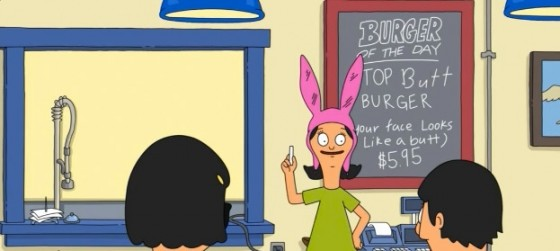

Top Butt Burger

Dad left us kids in charge of the restaurant today...BIG MISTAKE! He wanted the burger of the day to be the 'Top Bun' burger but
that is so BOOORINNGGG, so I fixed it for him. Presenting, the 'Top Butt' burger, cause your face looks like a butt!
Ingredients
- 16 ounces pulled pork
- 1 cup BBQ sauce
- 1/2 cup mayo
- 2 Tablespoons lime juice
- 1/2 Tablespoon honey
- 3/4 Teaspoon ground cumin
- 1/2 Teaspoon kosher salt
- 1/8 Teaspoon cayenne pepper
- 14-oz shredded slaw mix
- 3 scallions, thinly sliced
- 1/2 lb ground beef
- Muenster cheese, thinly sliced
Directions
Making the Coleslaw
- Whisk the mayo, lime juice, honey, cumin, salt, and cayenne pepper together in a large bowl until sauce is uniform.
- Mix the slaw mix and scallions together before tossing thoroughly in the sauce.
- Cover and refrigerate for a few hours or overnight to let the flavors meld.
Making the Butt Patties *snicker*
- Prepare pulled pork and combine with beef, shaping into equal sized patties.
- Grill patties until cooked thoroughly, topping with Muenster cheese about 2 minutes before removing the patties from heat.
- Assemble the burgers, topping patties with BBQ sauce and coleslaw
Credit to Bob's Burgers by Broads for this recipe.
Home